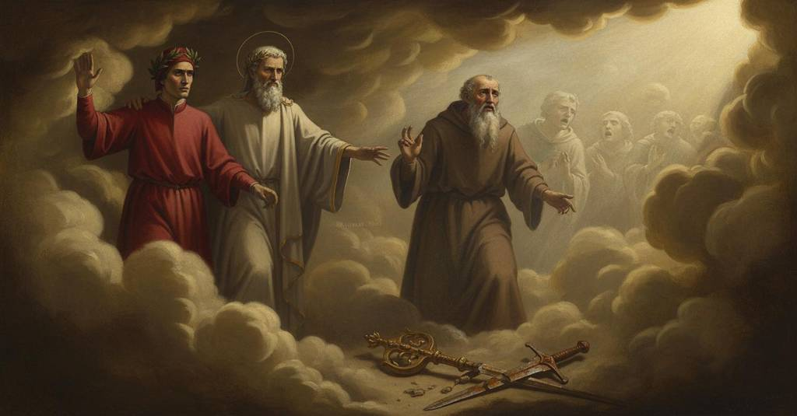

Purgatorio — Canto 16

1
Buio d’inferno e di notte privata
The dark of Hell and of a night deprived
地獄の闇と、夜の闇、
2
d’ogne pianeto, sotto pover cielo,
of every planet, under a poor sky,
あらゆる惑星を奪われ、貧しい空の下で、
3
quant’ esser può di nuvol tenebrata,
as much as it can be by clouds obscured,
雲によってどれほど暗くなりえようとも、
4
non fece al viso mio sì grosso velo
did not make for my face so thick a veil
私の顔にこれほど分厚いヴェールをかけることはなかった
5
come quel fummo ch’ivi ci coperse,
as did that smoke which covered us there,
そこで我らを覆ったあの煙ほどには、
6
né a sentir di così aspro pelo,
nor was it of a fiber so harsh to feel,
また、かくもざらついた毛のような手触りもなかった、
7
che l’occhio stare aperto non sofferse;
that the eye could not bear to stay open;
目を開けていることを許さぬほどに。
8
onde la scorta mia saputa e fida
wherefore my wise and faithful escort
それゆえ、賢く信頼できる我が案内人は
9
mi s’accostò e l’omero m’offerse.
drew near me and offered me his shoulder.
私に近づき、その肩を差し出してくれた。
10
Sì come cieco va dietro a sua guida
Just as a blind man goes behind his guide
盲人がその導き手の後について行くように
11
per non smarrirsi e per non dar di cozzo
so as not to get lost and not to bump
道に迷わぬため、またぶつからぬために
12
in cosa che ’l molesti, o forse ancida,
into something that might harm, or perhaps kill him,
彼を苦しめ、あるいは殺しかねないものに、
13
m’andava io per l’aere amaro e sozzo,
so I went through the bitter and foul air,
私は苦く汚れた大気の中を進んで行った、
14
ascoltando il mio duca che diceva
listening to my leader who kept saying:
我が導き手の言葉を聞きながら、彼は言った
15
pur: «Guarda che da me tu non sia mozzo».
“See that you are not cut off from me.”
ただ、「私から切り離されぬよう気をつけよ」と。
16
Io sentia voci, e ciascuna pareva
I heard voices, and each one seemed
私は声を聞いた、そしてそれぞれが
17
pregar per pace e per misericordia
to pray for peace and for mercy
平和と憐れみを祈っているようだった
18
l’Agnel di Dio che le peccata leva.
to the Lamb of God who takes away sins.
罪を取り除く神の小羊に。
19
Pur ‘Agnus Dei’ eran le loro essordia;
Only ‘Agnus Dei’ were their opening words;
ただ「アニュス・デイ」が彼らの言葉の始まりだった。
20
una parola in tutte era e un modo,
one word was in them all and one melody,
全てにおいて一つの言葉、一つの様式であり、
21
sì che parea tra esse ogne concordia.
so that among them seemed every concord.
そのため彼らの間には完全な一致があるように見えた。
22
«Quei sono spirti, maestro, ch’i’ odo?»,
“Are those spirits, master, that I hear?”
「師よ、私が聞いているのは霊たちですか？」
23
diss’ io. Ed elli a me: «Tu vero apprendi,
I said. And he to me: “You apprehend truly,
と私は言った。すると彼は私に、「その通りだ、
24
e d’iracundia van solvendo il nodo».
and they go loosening the knot of wrath.”
彼らは憤怒の結び目を解いているのだ」。
25
«Or tu chi se’ che ’l nostro fummo fendi,
“Now who are you that cleaves our smoke,
「さて、お前は何者だ、我らの煙を裂き、
26
e di noi parli pur come se tue
and speak of us just as if you still
我らのことを語るとは、まるでまだお前が
27
partissi ancor lo tempo per calendi?».
partitioned time according to the calends?”
時を暦で計っているかのように？」。
28
Così per una voce detto fue;
Thus was it said by a single voice;
このように一つの声によって言われた。
29
onde ’l maestro mio disse: «Rispondi,
wherefore my master said: “Answer,
そこで我が師は言った、「答えよ、
30
e domanda se quinci si va sùe».
and ask if from here one goes upward.”
そしてここから上に登れるか尋ねるのだ」。
31
E io: «O creatura che ti mondi
And I: “O creature who are cleansing yourself
そこで私は、「おお、自らを清める被造物よ、
32
per tornar bella a colui che ti fece,
to return beautiful to Him who made you,
汝を創りたもうた御方の元へ美しく帰るために、
33
maraviglia udirai, se mi secondi».
you will hear a marvel, if you attend me.”
私に従うなら、汝は驚くべきことを聞くだろう」。
34
«Io ti seguiterò quanto mi lece»,
“I will follow you as far as is allowed me,”
「許される限り汝に従おう」
35
rispuose; «e se veder fummo non lascia,
he replied; “and if smoke does not let us see,
と彼は答えた、「そして煙が見ることを許さぬなら、
36
l’udir ci terrà giunti in quella vece».
hearing will keep us joined in its stead.”
聞くことが代わりに我らをつなぎとめるだろう」。
37
Allora incominciai: «Con quella fascia
Then I began: “With that wrapping
そこで私は始めた、「死が解きほぐす
38
che la morte dissolve men vo suso,
which death dissolves I go upward,
その帯と共に私は上へ行く、
39
e venni qui per l’infernale ambascia.
and I came here through the infernal anguish.
そして地獄の苦難を経てここへ来た。
40
E se Dio m’ha in sua grazia rinchiuso,
And if God has so enclosed me in His grace
そしてもし神がその恩寵のうちに私を包み、
41
tanto che vuol ch’i’ veggia la sua corte
that He wishes me to see His court
私がその宮廷を見ることを望んでおられるのなら、
42
per modo tutto fuor del moderno uso,
in a manner wholly outside modern custom,
全く現代の慣習から外れた方法で、
43
non mi celar chi fosti anzi la morte,
do not hide from me who you were before death,
死ぬ前に汝が誰であったか私に隠すな、
44
ma dilmi, e dimmi s’i’ vo bene al varco;
but tell me, and tell me if I go right for the passage;
だがそれを告げよ、そして私が正しく登り口へ向かっているか告げよ。
45
e tue parole fier le nostre scorte».
and your words shall be our escorts.”
そして汝の言葉が我らの案内となろう」。
46
«Lombardo fui, e fu’ chiamato Marco;
“I was a Lombard, and I was called Marco;
「私はロンバルディア人であり、マルコと呼ばれた。
47
del mondo seppi, e quel valore amai
I knew the world, and I loved that worth
世を知り、そしてその徳を愛した、
48
al quale ha or ciascun disteso l’arco.
at which everyone now has unbent the bow.
今や誰もがその弓の弦を緩めてしまったものを。
49
Per montar sù dirittamente vai».
To go upward, you are going straight.”
上へ登るには、汝はまっすぐに進んでいる」。
50
Così rispuose, e soggiunse: «I’ ti prego
Thus he replied, and added: “I pray you
彼はそう答え、そして付け加えた、「汝に願う、
51
che per me prieghi quando sù sarai».
that you pray for me when you are up above.”
上に着いた時には私のために祈ってくれと」。
52
E io a lui: «Per fede mi ti lego
And I to him: “By faith I bind myself to you
そこで私は彼に言った、「信義にかけて貴方に誓います、
53
di far ciò che mi chiedi; ma io scoppio
to do what you ask of me; but I am bursting
貴方が私に求めることをすると。しかし私は張り裂けそうです
54
dentro ad un dubbio, s’io non me ne spiego.
with a doubt, if I do not unburden myself of it.
ある疑念の内で、もしそれを解き明かせなければ。
55
Prima era scempio, e ora è fatto doppio
At first it was simple, and now it is made double
初めは単純でしたが、今や二重になりました
56
ne la sentenza tua, che mi fa certo
by your statement, which makes me certain
貴方の言葉によって。その言葉は私に確信させるのです
57
qui, e altrove, quello ov’ io l’accoppio.
here, and elsewhere, of that to which I pair it.
ここで、そして別の場所でも、私がそれを結びつける先の言葉を。
58
Lo mondo è ben così tutto diserto
The world is indeed so all deserted
世はまさに、完全に荒れ果てています
59
d’ogne virtute, come tu mi sone,
of every virtue, as you declare to me,
あらゆる徳から、貴方が私に語るように、
60
e di malizia gravido e coverto;
and of malice pregnant and covered;
そして悪意に満ち、覆われています。
61
ma priego che m’addite la cagione,
but I pray you point out the cause to me,
しかし、私にその原因を示してくださるようお願いします、
62
sì ch’i’ la veggia e ch’i’ la mostri altrui;
so that I may see it and show it to others;
私がそれを見、そして他の者に示せるように。
63
ché nel cielo uno, e un qua giù la pone».
for one places it in heaven, and one here below.”
ある者は天に、ある者はこの地上にその原因を置くからです」。
64
Alto sospir, che duolo strinse in «uhi!»,
A deep sigh, which grief compressed into an “oh!”,
深い溜息を、苦しみが「ウーイッ！」と絞り出し、
65
mise fuor prima; e poi cominciò: «Frate,
he first let out; and then began: “Brother,
彼はまず吐き出した。そしてこう始めた、「兄弟よ、
66
lo mondo è cieco, e tu vien ben da lui.
the world is blind, and you indeed come from it.
世は盲目だ、そして汝はまさにそこから来た。
67
Voi che vivete ogne cagion recate
You who are living place every cause
汝ら生きる者は、あらゆる原因を
68
pur suso al cielo, pur come se tutto
only up in heaven, just as if everything
ただ天上に帰する、あたかもすべてが
69
movesse seco di necessitate.
moved with it by necessity.
天と共に必然によって動くかのように。
70
Se così fosse, in voi fora distrutto
If that were so, in you would be destroyed
もしそうであれば、汝らの内では破壊されるだろう
71
libero arbitrio, e non fora giustizia
free will, and there would be no justice
自由意志が。そして正義は存在しないだろう
72
per ben letizia, e per male aver lutto.
for good to have joy, and for evil, grief.
善に喜びを、悪に嘆きをもたらすという。
73
Lo cielo i vostri movimenti inizia;
The heavens initiate your movements;
天は汝らの動きを始める。
74
non dico tutti, ma, posto ch’i’ ’l dica,
I do not say all, but, suppose I say it,
すべてとは言わぬが、仮にそう言ったとしても、
75
lume v’è dato a bene e a malizia,
light is given to you for good and for malice,
善と悪を見分ける光が汝らには与えられている、
76
e libero voler; che, se fatica
and free will; which, if it endures fatigue
そして自由な意志が。それは、もし苦労して
77
ne le prime battaglie col ciel dura,
in its first battles with the heavens,
天との最初の戦いに耐えるなら、
78
poi vince tutto, se ben si notrica.
then conquers all, if it is well nourished.
後にはすべてに打ち勝つ、もしよく養われるならば。
79
A maggior forza e a miglior natura
To a greater force and to a better nature
より大いなる力、より善き自然に
80
liberi soggiacete; e quella cria
you, free, are subject; and that one creates
汝らは自由なまま従う。そしてそれが創るのだ
81
la mente in voi, che ’l ciel non ha in sua cura.
the mind in you, which the heavens do not have in their care.
汝らの内に精神を、天はその支配の内に持たぬものを。
82
Però, se ’l mondo presente disvia,
Therefore, if the present world goes astray,
それゆえ、もし現在の世が道を踏み外すなら、
83
in voi è la cagione, in voi si cheggia;
in you is the cause, in you let it be sought;
汝らの内にこそ原因があり、汝らの中にこそ求められるべきです。
84
e io te ne sarò or vera spia.
and of this I shall now be a true informant for you.
そして私は今から、そのことについて汝の真の案内人となろう。
85
Esce di mano a lui che la vagheggia
It comes forth from the hand of Him who delights in it
それを愛でる御者の手から出る、
86
prima che sia, a guisa di fanciulla
before it is, in the guise of a little girl
存在する前に、少女さながらに
87
che piangendo e ridendo pargoleggia,
who, weeping and laughing, plays childishly,
泣き、また笑い、子供らしくふるまう、
88
l’anima semplicetta che sa nulla,
the simple little soul that knows nothing,
何も知らぬ素朴な魂は、
89
salvo che, mossa da lieto fattore,
except that, moved by a happy maker,
ただ、喜びの創造主によって動かされ、
90
volontier torna a ciò che la trastulla.
it willingly turns to that which delights it.
己を楽しませるものへと喜んで向かう。
91
Di picciol bene in pria sente sapore;
Of a small good it first feels the taste;
初めはささやかな善の味を知り、
92
quivi s’inganna, e dietro ad esso corre,
there it is deceived, and runs after it,
そこで欺かれ、その跡を追う、
93
se guida o fren non torce suo amore.
if guide or rein does not turn its love.
もし導き手や手綱がその愛を正さねば。
94
Onde convenne legge per fren porre;
Whence it was necessary to place law as a rein;
ゆえに手綱として法を置くことが必要となり、
95
convenne rege aver, che discernesse
it was necessary to have a king, who could discern
王を持つことが必要となった、彼が見分けるために
96
de la vera cittade almen la torre.
at least the tower of the true city.
真の都の、少なくとも塔を。
97
Le leggi son, ma chi pon mano ad esse?
The laws exist, but who puts a hand to them?
法はある、だが誰がそれに手をかけるのか？
98
Nullo, però che ’l pastor che procede,
No one, because the shepherd who precedes,
誰もいない、なぜなら先導する牧者は、
99
rugumar può, ma non ha l’unghie fesse;
can ruminate, but does not have cloven hooves;
反芻はできるが、蹄は分かれていないからだ。
100
per che la gente, che sua guida vede
wherefore the people, who see their guide
それゆえ民は、その導き手が見るに
101
pur a quel ben fedire ond’ ella è ghiotta,
strike only at that good of which they are greedy,
ただ自らが貪る善を追い求めるのを、
102
di quel si pasce, e più oltre non chiede.
feed on that, and ask for nothing more.
それを糧とし、それ以上は求めない。
103
Ben puoi veder che la mala condotta
You can well see that the bad guidance
よく分かるだろう、悪しき指導こそが
104
è la cagion che ’l mondo ha fatto reo,
is the cause that has made the world wicked,
世を罪深くした原因であり、
105
e non natura che ’n voi sia corrotta.
and not nature that is corrupt in you.
汝らのうちにある本性が堕落したのではないと。
106
Soleva Roma, che ’l buon mondo feo,
Rome, which made the world good, used to have
かつてローマは、良き世を作ったが、
107
due soli aver, che l’una e l’altra strada
two suns, which made visible both roads,
二つの太陽を持っていた、それらは双方の道を
108
facean vedere, e del mondo e di Deo.
that of the world and that of God.
照らし示していた、世の道と神の道とを。
109
L’un l’altro ha spento; ed è giunta la spada
The one has extinguished the other; and the sword is joined
一方が他方を消し、そして剣は
110
col pasturale, e l’un con l’altro insieme
with the pastoral staff, and the one with the other
牧杖と結びつき、一方が他方と共に
111
per viva forza mal convien che vada;
by sheer force must of necessity go ill;
無理やり進むのは、よろしくない。
112
però che, giunti, l’un l’altro non teme:
because, joined, the one does not fear the other:
なぜなら、結びつけば、一方は他方を恐れないからだ。
113
se non mi credi, pon mente a la spiga,
if you do not believe me, pay mind to the ear of grain,
もし私を信じぬなら、穂に心を向けよ、
114
ch’ogn’ erba si conosce per lo seme.
for every plant is known by its seed.
いかなる草もその種によって知られるのだから。
115
In sul paese ch’Adice e Po riga,
In the land that the Adige and Po water,
アディジェとポーが潤す国には、
116
solea valore e cortesia trovarsi,
valor and courtesy used to be found,
かつて武勇と礼節が見いだされた、
117
prima che Federigo avesse briga;
before Federigo had his struggle;
フリードリヒが争いを起こす以前には。
118
or può sicuramente indi passarsi
now anyone can securely pass through there
今やそこを安全に通り過ぎることができる
119
per qualunque lasciasse, per vergogna
who for shame has forsworn
恥のゆえに避ける者なら誰でも、
120
di ragionar coi buoni o d’appressarsi.
speaking with the good or approaching them.
善き者と語り、あるいは近づくことを。
121
Ben v’èn tre vecchi ancora in cui rampogna
Indeed there are still three old men in whom
まだそこには三人の老人がいて、彼らのうちに
122
l’antica età la nova, e par lor tardo
the ancient age reproaches the new, and it seems long to them
古き時代が新しきを叱責し、彼らには遅く思える
123
che Dio a miglior vita li ripogna:
that God should recall them to a better life:
神が彼らをより良き生へと移されるのが。
124
Currado da Palazzo e ’l buon Gherardo
Currado da Palazzo and the good Gherardo
コッラード・ダ・パラッツォと善きゲラルド
125
e Guido da Castel, che mei si noma,
and Guido da Castel, who is better named,
そしてグイド・ダ・カステル、彼はより良く呼ばれる、
126
francescamente, il semplice Lombardo.
in the French manner, the simple Lombard.
フランス風に、素朴なるロンバルディア人、と。
127
Dì oggimai che la Chiesa di Roma,
Say henceforth that the Church of Rome,
今や言うがよい、ローマの教会は、
128
per confondere in sé due reggimenti,
by confounding in itself two governments,
自らの内に二つの統治を混同するがゆえに、
129
cade nel fango, e sé brutta e la soma».
falls in the mud, and befouls itself and its burden.”
泥の中に倒れ、自らと荷を汚している、と」。
130
«O Marco mio», diss’ io, «bene argomenti;
“O my Marco,” I said, “you argue well;
「おお、我がマルコよ」と私は言った、「見事な論証です。
131
e or discerno perché dal retaggio
and now I discern why from the inheritance
そして今、私は見分けます、なぜ世襲財産から
132
li figli di Levì furono essenti.
the sons of Levi were excluded.
レヴィの子らが免除されたのかを。
133
Ma qual Gherardo è quel che tu per saggio
But which Gherardo is he whom you, as a sample,
しかし、どのゲラルドですか、あなたが模範として
134
di’ ch’è rimaso de la gente spenta,
say has remained of the vanished people,
滅びた民の中に残ったと言い、
135
in rimprovèro del secol selvaggio?».
as a reproach to the savage age?”
野蛮な時代の叱責となっているというのは？」。
136
«O tuo parlar m’inganna, o el mi tenta»,
“Either your speech deceives me, or it is tempting me,”
「おお、汝の言葉は私を欺くか、あるいは試している」
137
rispuose a me; «ché, parlandomi tosco,
he answered me; “for, speaking Tuscan to me,
と彼は私に答えた。「なぜなら、トスカーナの言葉で話しながら、
138
par che del buon Gherardo nulla senta.
it seems you have heard nothing of the good Gherardo.
善きゲラルドのことを何も聞いていないように思える。
139
Per altro sopranome io nol conosco,
By other surname I do not know him,
他の姓では私は彼を知らない、
140
s’io nol togliessi da sua figlia Gaia.
unless I were to take it from his daughter Gaia.
もし彼の娘ガイアからそれを取らないならば。
141
Dio sia con voi, ché più non vegno vosco.
God be with you, for I come with you no farther.
神が汝らと共にありますように、私はもはや汝らと共には行かぬ。
142
Vedi l’albor che per lo fummo raia
See the brightness that through the smoke already
見よ、煙を通して光を放つ曙光が
143
già biancheggiare, e me convien partirmi
shines white, and I must depart
すでに白み始め、私は去らねばならぬ
144
(l’angelo è ivi) prima ch’io li paia».
(the angel is there) before I appear to him.”
（天使がそこにいる）私があの者に見える前に」。
145
Così tornò, e più non volle udirmi.
Thus he turned back, and would hear me no more.
こうして彼は引き返し、もはや私の言葉を聞こうとはしなかった。